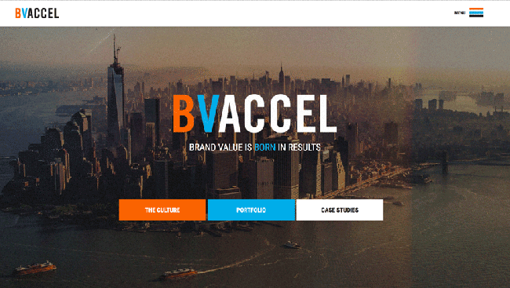
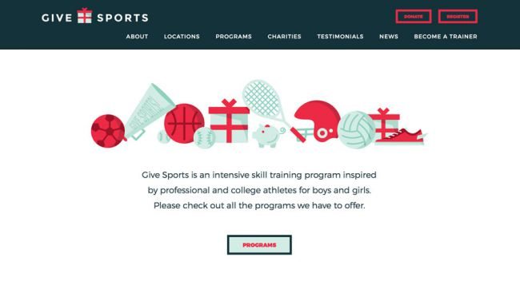

From hidden navigation and pop-out menus, to wearables and split screen, these are the web design trends we expect to shape 2017.
01. Hidden Navigation and Pop-out Menus
At a time when browsing on mobile devices is more prevalent than on desktop, screen space is a valuable commodity. Hiding features and menus until they're needed frees up the screen for the more enjoyable elements like images or videos, and creates a sleeker, minimalist design that makes it easier to focus.
A near-necessity for mobile, hidden navigation also improves the UX for devices with larger screens. Oddly enough, hiding a navigation menu actually adds more emphasis on navigation; users can focus on one thing at a time, and when they open the menu as needed, it takes central focus over the rest of the site.
Benefits:
- Conserves screen space
- More emphasis on navigation
- Minimalist design makes it easier to concentrate
- Improves appearance of first screen
- More flexibility in overall design structure
Best Practices
Single-color overlay. To maximize the benefit of simplification, most pop-out menus use a single-color background or overlay, rather than a distracting or cluttered background. You don't want the users to spend time figuring out the menu itself - save the good stuff for the site pages.

Large, simple typography. Echoing the points from above, large, bold, and easy-to-read typography makes the navigation menu clearer and more effective, plus helps fill the space. Designers often take this a step further with all caps.

Hamburger and X icons (preferably with MENU label). By this point, the standard accepted UI pattern for signifying a pop-out menu is the hamburger icon, which turns into an X icon when activated so users know how to close it (typically it appears in the top-left corner). We always recommend adding a "MENU" label for the sake of clarity.
Push or overlay content. Pop-out menus rarely take up the entire screen. Leaving a little of the original content visible allows easy return for mobile, and creates a nice effect for desktops that mimics mobile browsing.
02. Inspiration from Wearables
Just as mobile browsing is influencing desktop design, so are wearables influencing web design as a whole. With tens of millions of wearables sold in 2015, users are coming to appreciate the same streamlined style of UI on their other devices.
Even though wearables can't afford to waste space, the same minimalist principles still make browsing on other devices faster and with less effort. The "less is more" ideology doesn't limit itself to any one screen size.
Benefits:
- Streamlined UX
- Less confusion and distractions
- Minimalism reduces loading times
Best Practices
Containers and cards. While cards have been a persistent trend for awhile now, wearables are breathing new life into them. The wearable style of structuring involves self-contained containers or cards, which leads to improved scannability on larger screens.
Large, SVG icons. Keep them scalable to look good on HD devices, and simple enough to be understood at a glance.

Disciplined color palette. Color palettes are now going back to basics. Two-color palettes - or a single color in addition to black and white - are becoming more and more popular.
Ample white space. For the sake of consistency among multiple devices, designs are favoring more white space, or to put it another way, extreme minimalism. This isn't just an aesthetic choice: it saves screen space on smaller devices, reduces loading times, improves visibility, and creates a more sophisticated atmosphere.
03. Material Design Lite (MDL)
Material Design Lite, or MDL, optimizes the paper-like design language for the web. With guidebooks, six pre-existing templates, and open-source components, MDL makes Material Design accessible to any website or web app designer.
The same physics-based interface still applies: layers, motions, shading, etc. are all used practically to show usability in a way that mirrors how we interact with the real world.
Benefits:
- An improvement on classic Material Design, retaining its original benefits
- Better learnability from "lifelike" interface
- Usable on all devices with cross-platform accessibility (not JavaScript-based)
Best Practices
Physics-based mechanics. Play on MDL's strengths by keeping in line with real-life physics principles, namely:
- Shadows should appear as if coming from the same natural light source
- Elements should have a consistent weight and thickness
- Motion is a reaction to user interaction
Customize. Take advantage of MDL's diverse component library to mix and match what works for you.
Flat color palette. MDL works best with a flat color palette: bright and bold colors, usually one primary and one accent. This also suits the minimalist aesthetic encouraged by the first two trends.
Continue reading on Creative Bloq